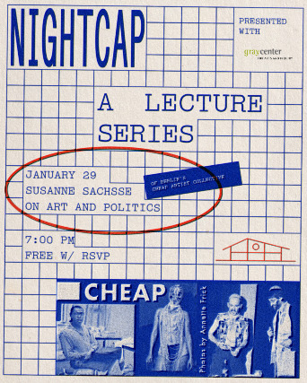

Art and Politics with Susanne Sachsse of Berlin’s CHEAP Art Collective
Nightcap is a Thursday evening lecture series at Three Top Lounge featuring engaging talks and conversations with experts across disciplines. Presented in partnership with Chicago Humanities, Sexpectations, the Gray Center at the University of Chicago, and the MCA, each 40-minute session begins at 7pm and pairs thoughtful ideas with a well-made Three Top Lounge drink.
For the second installment in the Nightcap Lecture Series, we welcome artist Susanne Sachsse for a presentation on her Berlin-based artist collective CHEAP. Sachsse co-founded CHEAP in 2001 with Daniel Hendrickson and Marc Siegel as a queer artistic and political framework for the production of installations, videos, performances, radio shows, festivals and club events. Vaginal Davis has since become a crucial collective member, and artists Jonathan Berger, Pola Sieverding and Xiu Xiu are frequent collaborators. Following her presentation, Sachsse will be joined by University of Chicago professor in English Literature Jonathan Flatley and Museum of Contemporary Art Chicago Assistant Curator Jack Schneider. Flatley is currently collaborating with Sachsse and Siegel at UChicago’s Gray Center for Arts and Inquiry on a project exploring 1990s politics and culture. Schneider’s current MCA exhibition, City in a Garden, engages Chicago’s history of queer art and activism dating back to the beginning of the AIDS crisis.